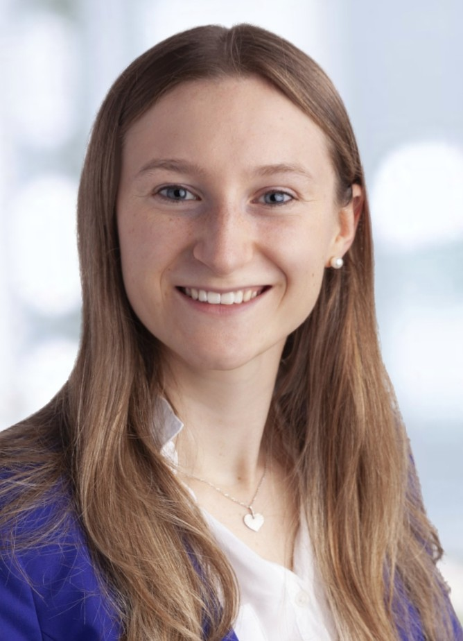

Hi, I’m Melanie 👋
I am a PhD student at the Munich Center for Machine Learning (MCML) and the TUM Chair of Computational Imaging and AI in Medicine (since August 2026), working on 3D reconstruction from medical ultrasound imaging data.
I hold an M.Sc. in Mathematics in Data Science from the Technical University of Munich (TUM). I’m passionate about bridging the gap between mathematical theory and real-world applications.
Outside of academia, I enjoy building hands-on projects like posEQuest, a computer-vision based coaching tool for equestrian sports.
- Based in: Munich, Germany
- Currently: PhD Student (MCML & TUM) · since Aug 2026
- Interests: 3D Reconstruction, Computer Vision, Mathematics
Email (University): melanie-maria.maier@tum.de
Email (Private): melanie-maria.maier@t-online.de
·
Research Focus and Experience
- 3D Reconstruction: 3D reconstruction from ultrasound imaging
- Biosignal Analysis: Machine learning for ECG signals
- Generative Models: Elucidated Diffusion Models (EDM) for satellite image downscaling
- Reinforcement Learning: VLM-assisted RL agents and robust evaluation in unseen environments
Personal Interests
- Computer Vision in Sports: Real-time posture tracking and pose estimation
- Entrepreneurship: Shaping the next wave of tech
- Sports: Passionate equestrian athlete and trainer